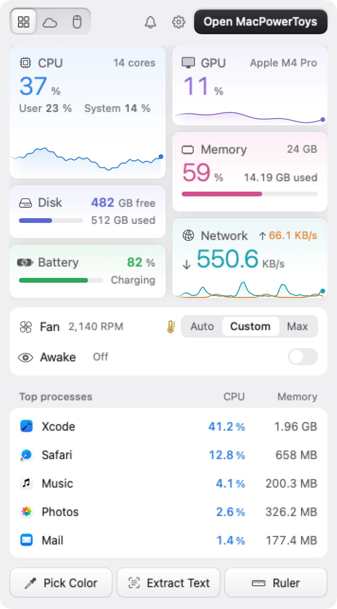
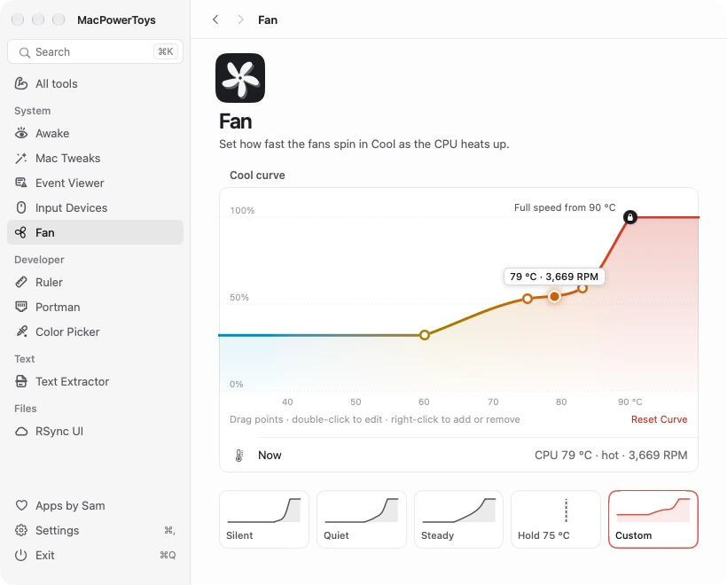
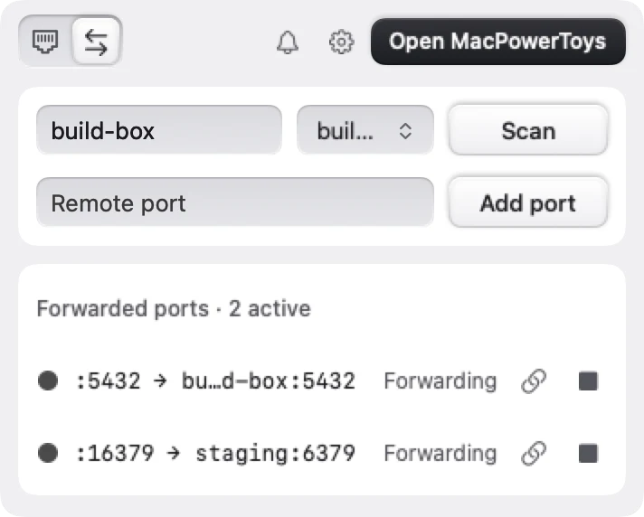
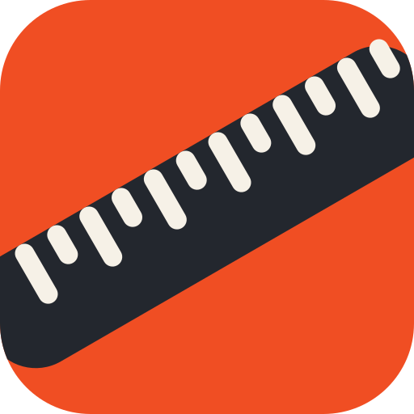

Your menu bar, doing more.
Nine free tools in one native panel: system stats, fan curves, dev server ports, cloud copies, and scroll settings for each mouse.
brew install --cask samhqapp/tap/macpowertoysVersion 2.0.0 for macOS 26.2 or later. Open source under MIT.


Fan curves that stay quiet.
Pick Auto, Cool, or Max right from the panel. In Cool you draw the curve yourself: how fast the fans spin at each CPU temperature. Above 90 °C they ramp to full speed by 95 °C, whatever you drew.
This uses the standard Cool curve from the app.


Portman finds every dev server.
It watches the ports your projects open, shows what each server uses, and brings ports from your SSH hosts to this Mac. Four steps from install to a forwarded port.
Turn it on.
Open MacPowerToys, pick Portman, and switch it on. Choose the port range it watches, then open it any time with ⌥⌘P.
See every server.
Each server shows its project, git branch, uptime, and memory. The ring at the top adds them all up.
Open one to check it.
Live memory and CPU graphs. Restart or stop it, open the folder in your editor, or copy its URL.
Forward a port over SSH.
Pick a host from your SSH config, scan it, and add a port. The remote server opens here as localhost.



RSync UI keeps copies going.
Copy, move, or sync files to Google Drive, B2, S3, and 70 more services through rclone. Pause, resume, or retry a copy right from the menu bar while you keep working.


Change what System Settings has no switch for, such as the Dock reveal delay or the screenshot format. Every row has a Default choice, and Modified lists what you changed.
Four small tools.
Each one opens from the panel or with its own shortcut, and quits its work when you close it.

Color Picker
Copy any pixel as HEX, RGB, HSL, SwiftUI, and five more.

Event Viewer
App activity and recent macOS errors, filtered by level and source.

Text Extractor
Draw a box over an image, a video, or an error, and the text goes to your clipboard.

Awake
Keep the Mac awake for 30 minutes, until 6 PM, or until you say stop.

RulerMeasure anything on screen. Color PickerCopy any pixel in 9 formats.
Color PickerCopy any pixel in 9 formats. Text ExtractorCopy text from the screen.
Text ExtractorCopy text from the screen. AwakeKeep the Mac awake.
AwakeKeep the Mac awake. Input DevicesScroll settings per device.
Input DevicesScroll settings per device. PortmanDev servers and SSH ports.
PortmanDev servers and SSH ports.- RSync UICloud copies with rclone.
 Event ViewerApp logs and macOS errors.
Event ViewerApp logs and macOS errors. Mac TweaksHidden macOS settings.
Mac TweaksHidden macOS settings.
Install it in one line.
brew install --cask samhqapp/tap/macpowertoysVersion 2.0.0 · macOS 26.2 or later · Signed with Developer ID and notarized by Apple · No tracking · MIT license